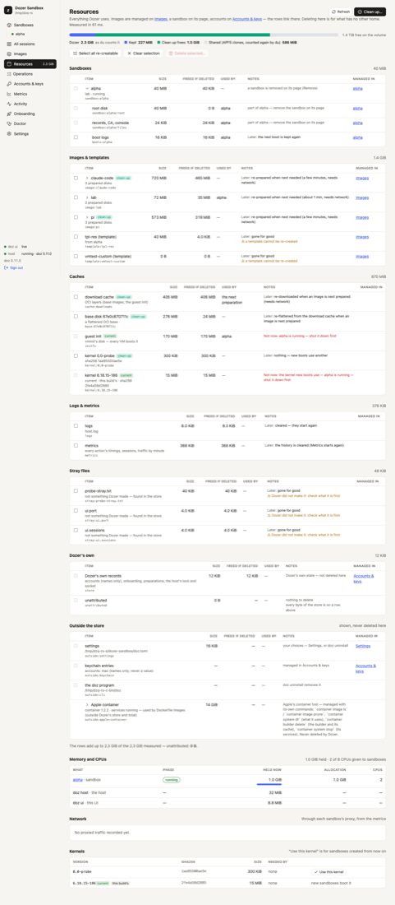

Chapter 13
Resources and disk space
Dozer keeps everything in one folder, the store. doz resources — and the dashboard's Resources page — accounts for every byte of it, shows the memory, CPUs and network your sandboxes use, and deletes what can safely go.
On this page
Dozer keeps everything in one folder, the store. doz resources — and the dashboard's Resources page — accounts for every byte of it, shows the memory, CPUs and network your sandboxes use, and deletes what can safely go.
Concepts#
- Sizes are real disk use. Dozer's disks are APFS clones: a sandbox shares most of its blocks with its image, and a restore point with its sandbox. So each row shows three numbers:
- size — the disk space it occupies, counted in full;
- freed if deleted — what deleting it would actually give back (only the blocks nobody else shares);
- used by — what depends on it.
- Everything adds up. The rows add up to the total that
dureports for the store. A last row, unattributed, is what no row explains; it should be 0. - Re-creatable vs. yours. A download cache, an unused prepared image or an old kernel can be made again (it costs time and network later). A sandbox, a restore point or a template can't — those are yours.
See it — in the terminal#
doz resources # every byte of the store, then memory, CPUs, traffic and kernels
doz resources --jsonThe groups: Sandboxes (each one's system disk, state disk, sleep snapshot, restore points, saved screens and boot logs), Images & templates, Caches (the download cache, base disks, the boot disk, kernels, preparation leftovers, and the tools layer — gh, downloaded once for sandboxes with GitHub as you; see The tools layer), Logs & metrics, Stray files, Dozer's own records — and Outside the store: your settings file, keychain entries by name, the doz program, project folders and Apple's container storage. Those outside rows are shown, never deleted here.
Free space#
doz resources clean --dry-run # what Clean up would delete, and what each frees
doz resources clean # asks once
doz resources rm cache:downloads kernel:6.12.1 --dry-run
doz resources rm point:web/3 # by id, as doz resources lists them- Clean up deletes what is re-creatable and unused: the download cache, the tools layer's cache, base disks, kernels nothing needs, images no sandbox was made from in the last
resources.clean_unused_days(30) days, and leftovers. It never deletes templates, sandboxes, restore points, settings or keys; logs and metrics are kept too (select them yourself to clear them). rmdeletes what you name, after showing the plan: each item, what it frees, what it costs later ("prepared again when next needed, about 3 min, needs network"), and anything refused and why.- Nothing breaks a sandbox. Refused, always: a sandbox's own disks (remove the sandbox instead); the kernel and boot disk while any sandbox is asleep or running (their snapshots need them); an image being prepared; a folder that is a sandbox's workspace; anything outside the store.
- The deletion waits until nothing that uses the disks is under way (a start, a wake, a preparation), and runs as one operation.
In the dashboard#
Resources in the sidebar (its total is shown beside it). The bar on top splits Dozer's total into what it keeps, what Clean up would free and the blocks clones share, with the disk's free space beside it; under it, a strip that jumps to each group (with its size) — a group's heading folds it, and the dashboard remembers which you folded. Then the rows, each linking to where it's managed: an image to Images, a sandbox's parts to its page, accounts to Accounts & keys.
- Tick what should go, or Select all re-creatable.
- Delete selected… — one confirmation lists each item, what it frees and what it costs later.
- Or Clean up… for the safe set.
The page measures when you open it, on Refresh, and when an operation ends.

Memory, CPUs, traffic and kernels#
The same report shows the memory each running sandbox holds (and the host's and the dashboard's), the CPUs given to sandboxes, each sandbox's network traffic through the proxy (today and in all), and the Linux kernels. Use this kernel (or doz resources kernel kernel:VERSION, or pinned for this version's own) picks the kernel new sandboxes boot; existing ones keep theirs.
Apple's container storage#
If you build Dockerfile bases, Apple's container tool keeps its own images and data outside Dozer's store. The Resources page shows it as an Outside row — its data folder by part, the program, and the images Dozer built with it — so you know where the space went. Dozer never deletes it; manage it with Apple's container command.
Settings#
| key | default | what it does |
|---|---|---|
resources.clean_unused_days | 30 | Clean up removes a prepared image no sandbox was made from in this many days (1–3650). It's prepared again when next needed. |
host.boot_logs_kept | 5 | Boots kept per sandbox. |
store.path | ~/Library/Application Support/dozer-sandbox | Where the store is. |
Troubleshooting#
| symptom | what to do |
|---|---|
| The unattributed row isn't 0 | Something in the store no row explains. doz resources --json lists it under stray files; report it if it keeps growing. |
| "refused: … a sandbox's disk" | Remove or reset the sandbox instead; Resources never deletes a live sandbox's disks. |
| Clean up freed less than the sizes suggested | Sizes count shared blocks in full; "freed" counts only what nothing else shares. |
| The Mac's disk is still full | Look at Outside the store: Apple's container storage and your project folders are yours to manage. |
Edit this page on GitHub · Chapter 13 of 25